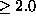

Next: Measures of nonlinearity
Up: Surrogate time series
Previous: Acknowledgements
Starting with the publication of source code for a few nonlinear time series
algorithms by Kantz and Schreiber [4], a growing number of programs
has been put together to provide researchers with a library of common tools.
The TISEAN software package is freely available in source code form and an
introduction to the contained methods has been published in
Ref. [9]. More recent versions of the package () contain a
comprehensive range of routines for the generation and testing of surrogate
data. The general constrained randomisation scheme described in
Sec. 5 is implemented as an extendable framework that allows for
the addition of further cost functions with relatively little effort. With few
exceptions, all the code used in the examples in this paper is publicly
available as part of TISEAN 2.0.
Next: Measures of nonlinearity
Up: Surrogate time series
Previous: Acknowledgements
Thomas Schreiber
Mon Aug 30 17:31:48 CEST 1999